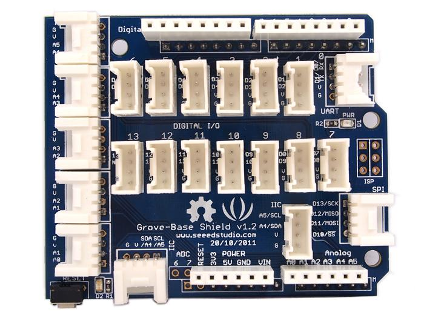

The Grove base shield plugs into an Arduino and is the foundation of the Grove system. All I/O ports of the Arduino are exposed and adapted into Grove connectors which include digital I/O, analog I/O, and specialized ports (I2C, SPI, UART). Click on one of the links below for more details on your version of the Grove base shield. Clicking on the photo will only lead to a wiki page with more detailed versions of the photograph.
|  | 
|
Here lists the comparison between various versions of Grove - Base Shield:
| Parameter | Grove - Base Shield V1.2 | Grove - Base Shield V1.3 |
|---|---|---|
| Operation voltage | +5V | +5V |
| Grove Connectors | 22 | 16 |
| Digital Connectors | 15 | 8 |
| IIC Connectors | 2 | 4 |
| Standard Shield | Yes | Yes |